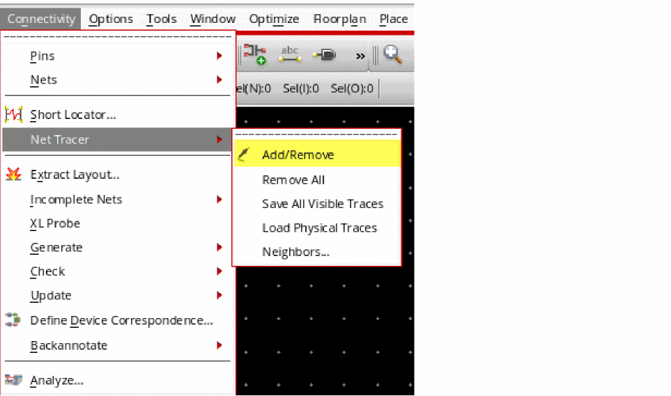
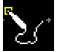
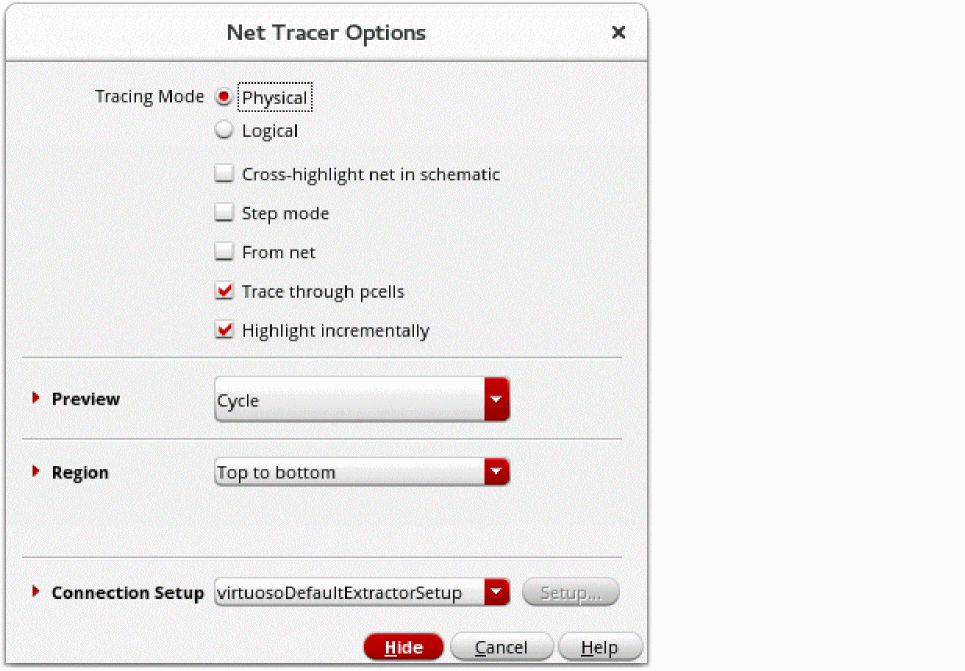

Adding Net Traces
To invoke the Net Tracer to add (or remove) traces for selected nets:
-
Use the Connectivity – Net Tracer – Add/Remove command and press
F3.
Alternatively, you can use the Net Tracer Toolbar to launch the Net Tracer.
The layout cursor changes to display a pen icon,  , indicating the Net Tracer functionality is enabled. -
(Optional) Press
F3to open the Net Tracer Options form. Use the form to specify the Layout XL constraint group to use for net tracing and the hierarchy range for which to create the traces. You can also use the form to specify your trace preview preferences and to specify whether to create traces from a net and whether the traces should be created incrementally. The Net Tracer Options form is available through the Connectivity – Net Tracer – Add/Remove command. Alternatively, use the lntHiNetTracer SKILL function.
 - (Optional) Choose Options – Net Tracer to open the Net Tracer Display Options form. Use the form to specify the required trace display options.
-
Click the shape in the layout canvas for which a trace needs to be created.
If the shape that you select for creating the trace happens to be at an overlap of several layer purpose-pairs, the Choose LPP To Trace dialog box pops up. -
Select the layer purpose pair to use for creating the trace and click OK.
The shape is traced in the layout canvas, using the tracing and display options selected. -
To remove an already existing trace for a shape, click the shape in the layout canvas while keeping the
Ctrlkey pressed.
Removing All Traces
To remove all the existing traces in a design:
Related Topics
Net Tracer Display Options Form
Return to top